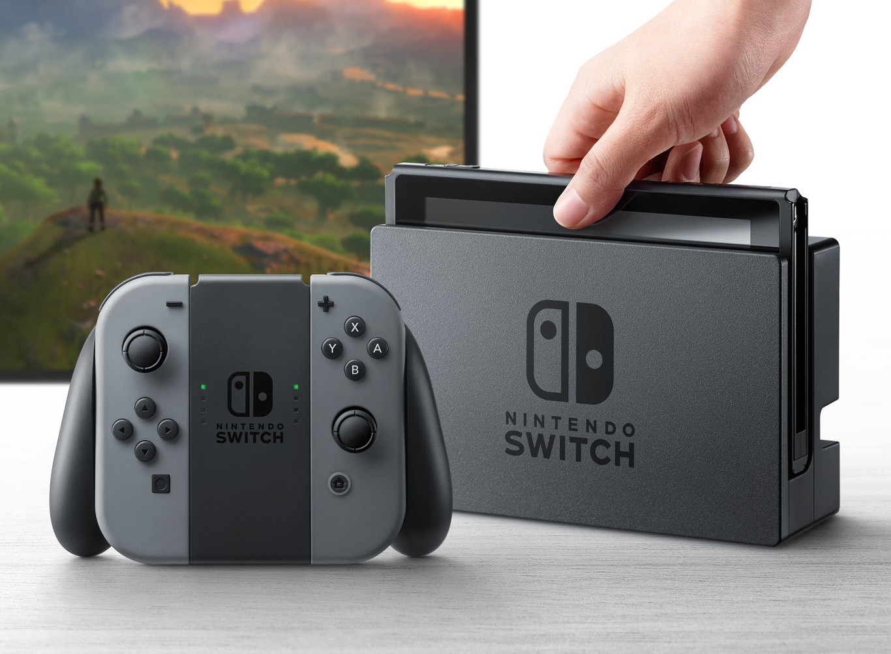

RV
Autor:carlos daniel colmenares mendez

Definición:
es una consola de videojuegos desarrollada por Nintendo. Conocida en el desarrollo por su nombre código «NX», se dio a conocer en octubre de 2016 y fue lanzada mundialmente el 3 de marzo de 2017.